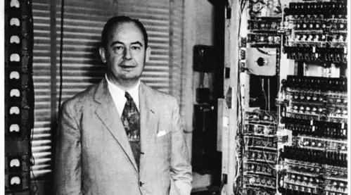
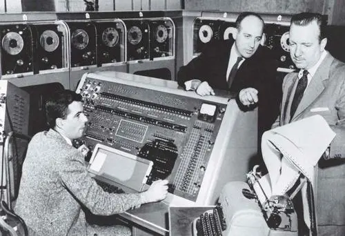

计算机之父——冯诺依曼
1.简介
1944年仲夏的一个傍晚，戈德斯坦来到阿贝丁车站，等候去费城的火车，突然看见前面不远处，有个熟悉的身影向他走过来。来者正是闻名世界的大数学家冯·诺依曼。天赐良机，戈德斯坦感到绝不能放过这次偶然的邂逅，他把早已埋藏在心中的几个数学难题，一古脑儿倒出来，向数学大师讨教。数学家和蔼可亲，没有一点架子，耐心地为戈德斯坦排忧解难。听着听着，冯·诺依曼不觉流露出吃惊的神色，敏锐地从数学问题里，感到眼前这位青年身边正发生着什么不寻常的事情。他开始反过来向戈德斯坦发问，直问得年轻人“好像又经历了一次博士论文答辩”。最后，戈德斯坦毫不隐瞒地告诉他莫尔学院的电子计算机课题和目前的研究进展。
冯·诺依曼真的被震惊了，随即又感到极其兴奋。从1940年起，他就是阿贝丁试炮场的顾问，同样的计算问题也曾使数学大师焦虑万分。他急不可耐地向戈德斯坦表示，希望亲自到莫尔学院看一看那台尚未出世的机器。多年后，戈德斯坦回忆说：“当琼尼看到我们正在进行的一件工作时，他就双脚跳到电子计算机旁”。
莫契利和埃克特高兴地等待着冯·诺依曼的来访，他们也迫切希望得到这位著名学者的指导，同时又有点儿怀疑。埃克特私下对莫契利说道：“你只要听听他提的第一个问题，就能判断出冯·诺依曼是不是真正的天才”。
骄阳似火的8月，冯·诺依曼风尘仆仆地赶到了莫尔学院的试验基地，马不停蹄约见攻关小组成员。莫契利想起了埃克特的话，竖着耳朵聆听数学大师的第一个问题。当他听到冯·诺依曼首先问及的是机器的逻辑结构时，不由得对埃克特心照不宣地一笑，两人同时都被这位大科学家的睿智所折服！从此，冯·诺依曼成为莫尔学院电子计算机攻关小组的实际顾问，与小组成员频繁地交换意见。年轻人机敏地提出各种设想，冯·诺依曼则运用他渊博的学识把讨论引向深入，逐步形成电子计算机的系统设计思想。冯·诺依曼以其厚实的科技功底、极强的综合能力与青年们结合，极大提高了莫尔小组的整体水平，使莫尔小组成为“人才放大器”，至今依然是科学界敬慕的科研组织典范。

人们后来把“电子计算机之父”的桂冠戴在冯·诺依曼头上，而不是第一台电脑的两位实际研制者，这并不是没有根据的。莫契利和埃克特研制的ENIAC计算机获得巨大的成功，但它最致命的缺点是程序与计算两分离。指挥近2万电子管“开关”工作的程序指令，被存 放在机器的外部电路里。需要计算某个题目前，埃克特必须派人把数百条线路用手接通，像电话接线员那样工作几小时甚至好几天，才能进行几分钟运算。
在ENIAC尚未投入运行前，冯·诺依曼就已开始准备对这台电子计算机进行脱胎换的改造。在短短10个月里，冯·诺依曼迅速把概念变成了方案。新机器方案命名为“离散变量自动电子计算机”，英文缩写EDVAC。1945年6月，冯·诺依曼与戈德斯坦等人，联名发表了一篇长达101页纸洋洋万言的报告，即计算机史上著名的“101页报告”。这份报告奠定了现代电脑体系结构坚实的根基，直到今天，仍然被认为是现代电脑科学发展里程碑式的文献。
在EDVAC报告中， 冯·诺依曼明确规定出计算机的五大部件： 运算器CA、 逻辑控制器CC、存储器M、输入装置I和输出装置O，并描述了五大部件的功能和相互关系。与ENIAC相比，EDVAC的改进首先在于冯·诺依曼巧妙地想出“存储程序”的办法，程序也被他当作数据存进了机器内部，以便电脑能自动一条接着一条地依次执行指令，再也不必去接通什么线路。其次，他明确提出这种机器必须采用二进制数制，以充分发挥电子器件的工作特点，使结构紧凑且更通用化。人们后来把按这一方案思想设计的机器统称为“诺依曼机”。
自冯·诺依曼设计的EDVAC计算机始，直到今天我们用“奔腾”芯片制作的多媒体计算机为止，电脑一代又一代的“传人”，大大小小千千万万台计算机，都没能够跳出“诺依曼机”的掌心。冯·诺依曼为现代计算机的发展指明了方向，从这个意义上讲，他是当之无愧的“电子计算机之父”。当然，随着人工智能和神经网络计算机的发展，“诺依曼机”一统天下的格局已经被打破，但冯·诺依曼对于发展电脑做出的巨大功绩，永远也不会因此而泯灭其光辉！
第二次世界大战结束后，由于种种原因，ENIAC研制小组发生令人痛惜的分裂，“内存程序”的机器无法被立即研制。冯·诺依曼、戈德斯坦和勃克斯三人返回了新泽西州普林斯顿大学。1946年，他们为普林斯顿高级研究院先期研制出新的IAS计算机（IAS即高级研究院英文缩写）。
冯·诺依曼的归来，在普林斯顿掀起了一股强劲的电脑热。一向冷冷清清的研究院沸腾了，大批专业人才仰慕他的大名，纷至沓来，使普林斯顿高级研究院一时间成为美国电子计算机的研究中心。 冯·诺依曼乘热打铁，着手将他那101页计算机方案付诸实施。1951 年，这台凝聚着他多年心血的EDSAC计算机终于面世，程序储存在机器内部后，效率比ENIAC提高数百倍，只用了3563个电子管和1万只晶体二极管，以1024个水银延迟线来储存程序和数据，消耗电力和占地面积亦只有ENIAC的三分之一。

在冯·诺依曼研制ISA电脑的期间，美国涌现了一批按照普林斯顿大学提供的ISA照片结构复制的计算机。例如，洛斯阿拉莫斯国家实验室研制的MANIAC，伊利诺斯大学制造的ILLAC。雷明顿·兰德公司科学家沃尔（W. Ware）甚至不顾冯·诺依曼的反对，把他研制的机器命名为JOHNIAC（“约翰尼克” ，“约翰”即冯·诺依曼的名字）。冯·诺依曼的大名已经成为现代电脑的代名词。
在普林斯顿，冯·诺依曼还利用计算机去解决各个科学领域中的问题。他提出了一项用计算机预报天气的研究计划，构成了今天系统的气象数值预报的基础；他受聘担任IBM公司的科学顾问，帮助该公司催生出第一台存储程序的电脑IBM 701；他对电脑与人脑的相似性怀着浓厚的兴趣，准备从计算机的角度研究人类的思维；他虽然没有参加达特默斯首次人工智能会议，但他开创了人工智能研究领域的数学学派；他甚至是提出计算机程序可以复制的第一人，在半个世纪前就预言了电脑病毒的出现……
1957年2月8日，冯·诺依曼身患骨癌，甚至没来得及写完那篇关于用电脑模拟人类语言的讲稿，就在美国德里医院与世长辞，只生活了 54个春秋。他一生获得了数不清的奖项，包括两次获得美国总统奖，1994年还被追授予美国国家基础科学奖。他是电脑发展史上最有影响的一代伟人。
2.趣事
one
一次，在一个数学聚会上，有一个年轻人兴冲冲的找到他，向他求教一个问题，他看了看就报出了正确答案。年轻人高兴地请求他告诉自己简便方法，并抱怨其他数学家用无穷级数求解的繁琐。冯·诺依曼却说道：“你误会了，我正是用无穷级数求出的。”可见他拥有过人的心算能力。
two
据说有一天，冯·诺依曼心神不定地被同事拉上了牌桌。一边打牌，一边还在想他的课题，狼狈不堪地“输掉”了10元钱。这位同事也是数学家，突然心生一计，想要捉弄一下他的朋友，于是用赢得的5元钱，购买了一本冯·诺依曼撰写的《博弈论和经济行为》，并把剩下的5元贴在书的封面，以表明他 “战胜”了“赌博经济理论家”，着实使冯·诺依曼“好没面子”。
three
冯诺依曼的驾驶水平很烂，经常发生事故，有一次他撞坏了车头，在警局里解释道：“我正在路上正常驾驶，右方窗外的树正在以60英里每小时的速度从我车旁穿过，突然，一棵树站在了我的车前，咚！”
four
在冯诺依曼临去世的前几天，肿瘤已经占据了他的大脑，但记忆力有时还是不可思议得好，那天乌拉姆坐在他的病榻前用希腊语朗诵一本修昔底德书中他特别喜欢的亚丁人进攻梅洛思的故事和佩里莱的演说，他记得很牢，会纠正乌拉姆的错误和发音。